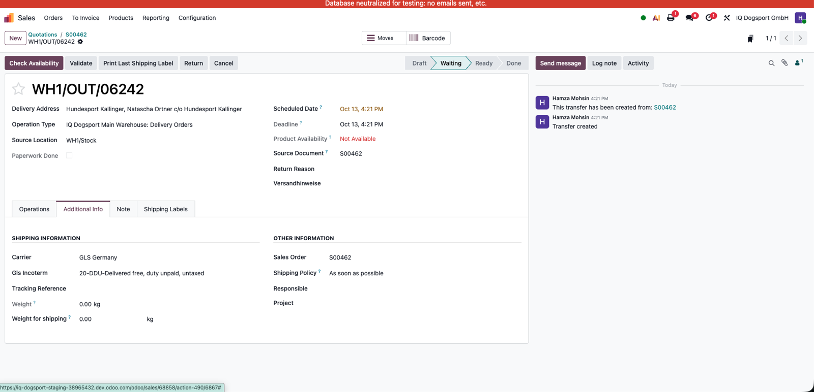
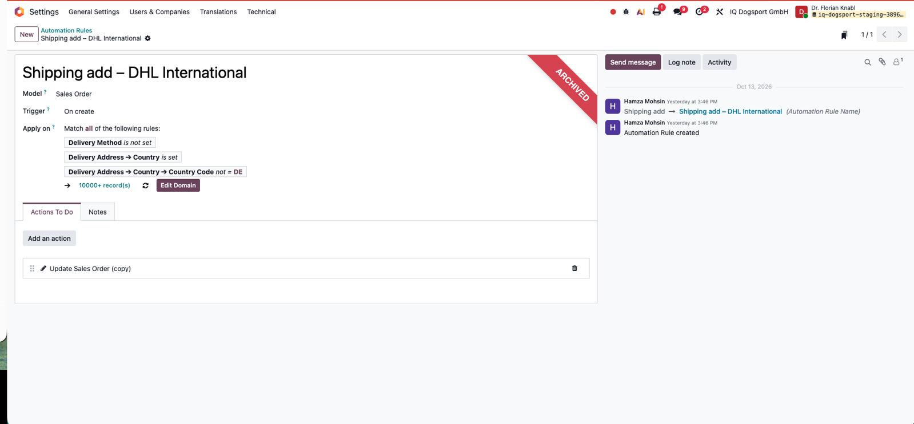
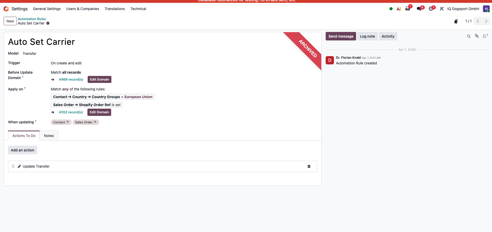
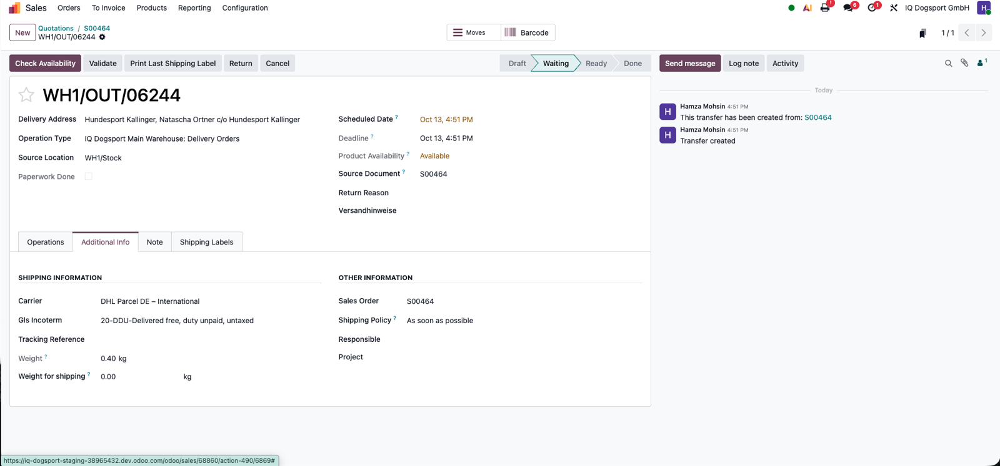
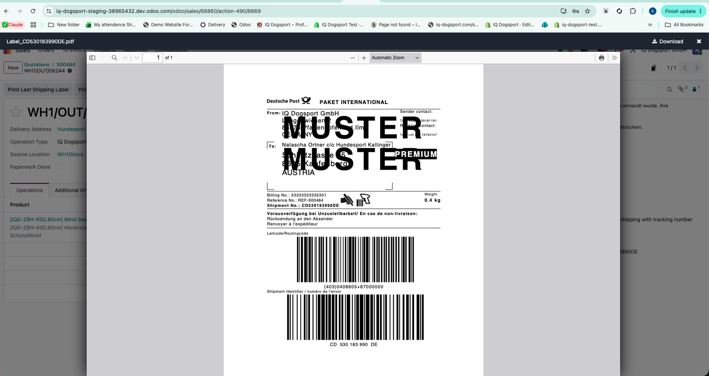
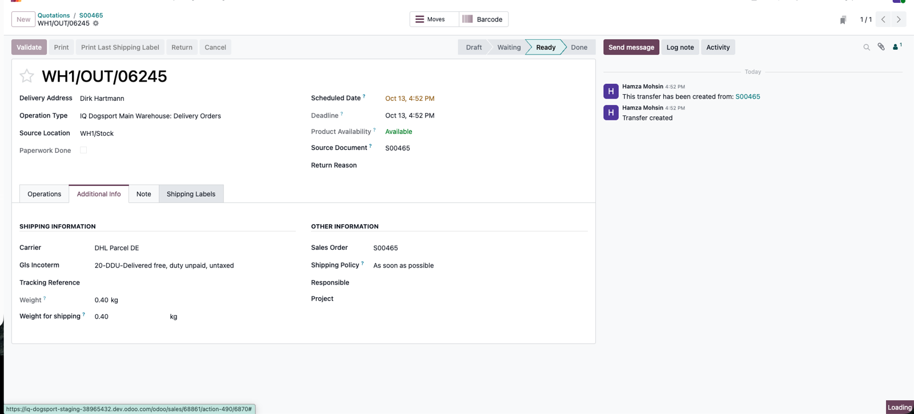
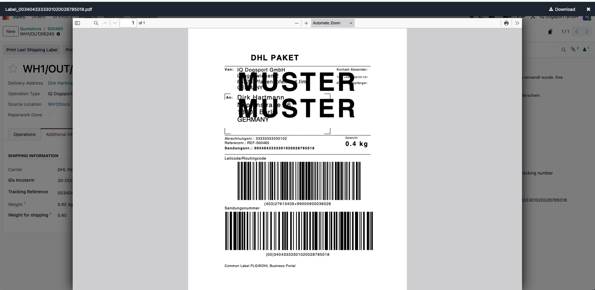
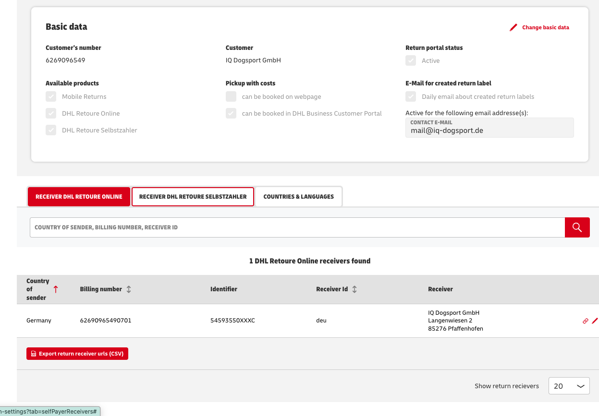
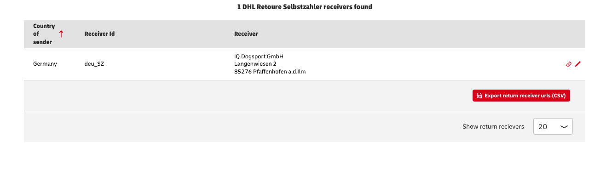

The working Staging configuration now uses three active automations: one to choose the domestic/international shipping method on Sales Orders, one to synchronize the method to Delivery Orders, and one to preselect the German return Receiver ID.
3 active automations1 inherited view3 old rules archived
| Status | Component | Model | Purpose |
|---|---|---|---|
| Active | Combined DHL Shipping Method New Staging ID to verify | sale.order | Choose DHL Parcel DE (V01PAK) for Germany; DHL Parcel DE – International (V53WPAK) for non-German test orders when method is empty. |
| Active | ID 66 — IQ Sync DHL Carrier to Delivery | stock.picking | Match outgoing transfer carrier to the sales order's selected DHL carrier. |
| Active | ID 64 — DHL Automatic Return Receiver | stock.picking | Assign German return Receiver ID deu, preserving manual receiver choices. |
| Active view | IQ DHL – Conditional Receiver Buttons Staging view ID 6113 | stock.picking | Display Get Receivers or Change Receiver based on receiver and tracking state. |
| Archived | ID 8 — Shipping add | sale.order | Old Germany-only fixed DHL rule; replaced by combined code. |
| Archived | ID 65 — Shipping add – DHL International | sale.order | Old international fixed DHL rule; replaced by combined code. |
| Archived | ID 7 — Auto Set Carrier | stock.picking | Previously forced a single carrier on transfers; conflicted with international shipments. |
Original problem: the first two Sales Order rules assigned fixed delivery methods by country. Two rules worked but were more complicated to maintain. They were consolidated into one On create Execute Code action in Staging.
| Setting | Value |
|---|---|
| Model | Sales Order (sale.order) |
| Trigger | On create |
| Apply on | Delivery Method is not set; Delivery Address Country is set |
| Action type | Execute Code (one combined conditional action) |
| Germany | DE → DHL Parcel DE / V01PAK |
| Staging international | Country not DE → DHL Parcel DE – International / V53WPAK |
| Safety rule | Do not overwrite a Delivery Method already selected on the Sales Order |
# Reference example - NOT verified against final saved Odoo action
# Model: sale.order | Trigger: On create
orders = records or record or env['sale.order']
for order in orders:
if order.carrier_id:
continue # Preserve a previously selected shipping method
country = order.partner_shipping_id.country_id
if not country:
continue
carrier_name = (
'DHL Parcel DE' if country.code == 'DE'
else 'DHL Parcel DE – International'
)
carriers = env['delivery.carrier'].search([
('name', '=', carrier_name),
('delivery_type', '=', 'dhl_parcel_de'),
])
if len(carriers) != 1:
log('DHL carrier not unique: %s' % carrier_name, level='warning')
continue
order.write({'carrier_id': carriers.id})Original failure: Sales Order S00462 for Austria contained DHL International, but WH1/OUT/06242 displayed GLS Germany. Investigation confirmed no general default carrier, Propagate Carrier = True on the stock rule, and correctly linked stock moves.
Automation 66 repairs the mismatch on outgoing deliveries. It must select the exact DHL carrier record from the sales order and avoid changing completed shipments or shipments already carrying a tracking number.

# Reference example - NOT verified against final saved Odoo action
# Model: stock.picking | Trigger: On create and edit
pickings = records or record or env['stock.picking']
for picking in pickings:
if picking.picking_type_id.code != 'outgoing':
continue
if picking.state in ('done', 'cancel'):
continue
if picking.carrier_tracking_ref:
continue
so = picking.sale_id
if not so or not so.carrier_id:
continue
if so.carrier_id.delivery_type != 'dhl_parcel_de':
continue # Do not turn GLS orders into DHL orders
if picking.carrier_id.id != so.carrier_id.id:
picking.write({'carrier_id': so.carrier_id.id})
log('Carrier synchronized: %s -> %s' %
(picking.name, so.carrier_id.name), level='info')Do not add a second conflicting transfer rule. If a warehouse operator intentionally changes a carrier, the automation's behavior around that manual override should be tested before Production.
Original issue: the DHL Return Receiver ID was empty on new returns. Warehouse staff had to open Get Receivers and manually select an entry for each German return.
| Setting | Configured value |
|---|---|
| Model | Transfer (stock.picking) |
| Trigger | On create and edit |
| Before Update Domain | Match all records |
| Apply on | [('dhl_return_receiver_id', '=', False)] |
| When updating | Carrier, Contact, Operation Type — do not monitor Receiver ID itself |
| Action | Execute Code |
| Result | Incoming DHL return from Germany → deu if receiver is blank |


# Documented German DHL return-receiver logic
# Model: stock.picking | Execute Code
pickings = records or record or env['stock.picking']
for picking in pickings:
if not picking.is_dhl_return:
continue
if picking.picking_type_id.code != 'incoming':
continue
if picking.carrier_id.delivery_type != 'dhl_parcel_de':
continue
if picking.state in ('done', 'cancel'):
continue
if picking.dhl_return_receiver_id:
continue # Preserve manual receiver selection
if picking.partner_id.country_id.code == 'DE':
picking.write({'dhl_return_receiver_id': 'deu'})
log('DHL receiver deu assigned to %s' %
picking.name, level='info')is_dhl_return is a non-stored computed field, so the automation checks it in Python rather than placing it inside an Odoo search domain. The existing-receiver guard is essential: a manually chosen receiver is not overwritten.


This is not a fourth automation. The inherited extension view controls button visibility; BrowseInfo's existing methods still handle receiver lookup and label generation.
| Setting | Value |
|---|---|
| View | IQ DHL – Conditional Receiver Buttons (Staging ID 6113) |
| Model | stock.picking |
| Mode | Extension |
| Parent | stock.picking.form.inherit.dhl (Staging ID 6081) |
| Website | Empty |
| Active | True |
<data>
<xpath expr="//button[@name='action_open_return_receiver_wizard']" position="attributes">
<attribute name="invisible">not is_dhl_return or state in ('done', 'cancel') or carrier_tracking_ref or dhl_return_receiver_id</attribute>
</xpath>
<xpath expr="//button[@name='action_open_return_receiver_wizard']" position="after">
<button name="action_open_return_receiver_wizard"
type="object" string="Change Receiver" class="btn-secondary"
invisible="not is_dhl_return or state in ('done', 'cancel') or carrier_tracking_ref or not dhl_return_receiver_id"/>
</xpath>
</data>invisible expression on a single line inside the saved Odoo XML. A multiline expression previously caused an indentation error.
| State | Button |
|---|---|
| No Receiver ID and no tracking | Get Receivers |
| Receiver ID present, no tracking | Change Receiver |
| Tracking assigned, or Done/Cancelled | Neither |
| ID | Name | Reason for archive |
|---|---|---|
| 8 | Shipping add | Previous fixed Germany-only Sales Order carrier assignment; combined with international rule. |
| 65 | Shipping add – DHL International | Previous separate non-DE Sales Order carrier assignment; replaced by combined logic. |
| 7 | Auto Set Carrier | Fixed transfer-carrier assignment could override the sales order selection; replaced by selective synchronization. |


Keep these archived for rollback and audit. Do not reactivate them while the combined rule and automation 66 are active.
| Test | Evidence | Outcome |
|---|---|---|
| Italy outgoing | S00456 / WH1/OUT/06236 | International label generated after correcting carrier to international. |
| Austria outgoing | S00464 / WH1/OUT/06244 | DHL International selected; sandbox international label generated. |
| Germany outgoing | S00465 / WH1/OUT/06245 | DHL Domestic selected; sandbox domestic label generated. |
| Combined rule | Two fresh DE/international orders, 14 October | User confirmed automatic assignment on Sales Order and Transfer was correct. |
| German DHL return | New return created in Staging | deu selected without manual receiver step; return proceeded. |
| International DHL return | New return created in Staging | Prompted to choose Receiver ID; return succeeded after manual selection. |




DHL sandbox labels are for integration testing only. They do not constitute proof of a Production contract or live postage.
The DHL Business Customer Portal currently shows only one Retoure Online receiver:
| Service | Sender country | Receiver ID | Destination |
|---|---|---|---|
| Retoure Online | Germany | deu | IQ Dogsport GmbH, Langenwiesen 2, 85276 Pfaffenhofen |
| Retoure Selbstzahler | Germany | deu_SZ | IQ Dogsport GmbH, Langenwiesen 2, 85276 Pfaffenhofen (address corrected 14 October) |


V53WPAK; domestic remains V01PAK.deu) and the manual Change Receiver workflow before validating incoming goods.Dogsport/odoo-customizations is a documentation repository, not an Odoo deployment pipeline.To make the technical record complete, run this in Odoo Staging Shell and replace the two reference examples in this HTML with the code actually saved in your actions.
# READ ONLY: export the actual saved automation source in Staging.
for aid in [64, 66]:
a = env['base.automation'].sudo().browse(aid)
print('Automation:', a.id, a.name, 'active:', a.active,
'trigger:', a.trigger)
for action in a.action_server_ids:
print('Action:', action.name, '| type:', action.state)
if action.state == 'code':
print(action.code)
# Identify the combined automation (ID is not yet documented).
for a in env['base.automation'].sudo().search([
('model_id.model', '=', 'sale.order'),
('active', '=', True),
]):
print('Sale automation:', a.id, a.name, a.trigger)This command prints automation code only to the Shell output and does not change database records. Avoid copying API keys, passwords, client secrets or tokens into the GitHub article.